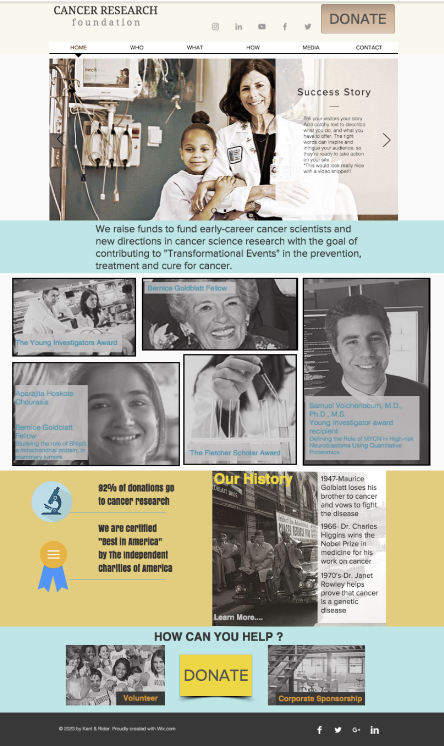

The Cancer Research Foundation
The Cancer Research Foundation's mission is to raise funds to fund early-career cancer scientists and new directions in cancer science research with the goal of contributing to "Transformational Events" in the prevention, treatment and cure for cancer.
The Project Summary
Provide wireframes and/or design recommendations for upcoming website redesign for The Cancer Research Foundation.
The Challanges
- The current website design is outdated, does not tell the 60+ year story about the organization in a way to attract NEW individual donors (investors).
- The focus is to transform the brand and foundation to attract a younger demographic, who has the ability to invest smaller amount of money in greater quantity.
The Goals
- Redesign layout to focus more on storytelling with photos and videos vs. pure text web design.
- Targets a younger demographic without excluding our current donors
- Is mobile optimized.
- Tells the story of the Foundation (incorporates historical/archival content)
- Integrates social media
- Maximizes donations
- Design needs to scale to include other city chapters.
Deliverables
- Provide wireframes/mockups with design features that align with goals.
- All design choices must have clear reasons and/or is backed by data.
Research
- Comparative websites.
- Optimizing donations through UX/UI.
- Button placements, scroll features, navigation bar placements.
- Referred to the data on the Nielson Norman Group Reports.
Execution
- Wireframes: Low-fidelity mock-ups.
- Prototype: We built 3 working prototype websites using Sketch and a template based service.
Marketing Strategy Features
- Expectation Management
- Google Analytics
- Google Ad-Words
- Google Business listing
- Search Engine Optimisation
- Keyword strategy
- Tailored action plan
Current Website
Suggested Design
